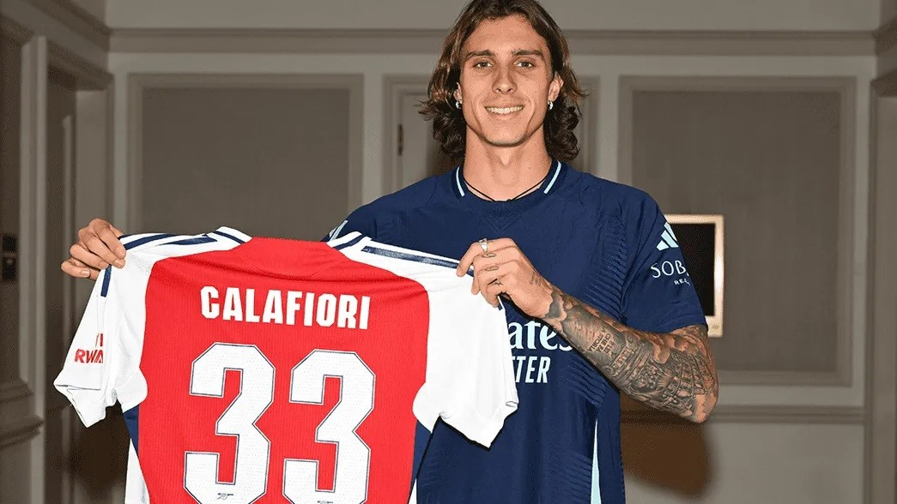

Tentang Calafiori
Riccardo Calafiori, lahir pada 19 Mei 2002 di Roma, Italia, adalah seorang pemain sepak bola profesional yang bermain sebagai bek untuk Arsenal di Liga Premier dan tim nasional Italia. Dengan tinggi 1,88 meter (6 kaki 2 inci), ia dikenal karena kemampuannya yang serbaguna, dapat bermain baik sebagai bek tengah maupun bek kiri. Calafiori memulai perjalanan sepak bolanya dengan akademi muda Roma, di mana ia menandatangani kontrak profesional pertamanya pada tahun 2018. Meskipun mengalami cedera lutut parah di awal kariernya, tekad dan ketekunannya membuatnya mampu bangkit kembali dengan luar biasa. Ia melakukan debut profesionalnya untuk Roma dalam pertandingan yang berkesan melawan Juventus pada Agustus 2020. Setelah bermain untuk Genoa, Basel, dan Bologna, Calafiori bergabung dengan Arsenal pada tahun 2024. Kariernya ditandai dengan pencapaian signifikan, termasuk mencetak gol profesional pertamanya di Liga Europa UEFA dan membantu Basel mencapai semifinal Liga Konferensi. Di luar lapangan, Riccardo dikenal karena etos kerjanya yang kuat dan dedikasinya pada olahraga. Perjalanannya dari bakat muda yang menjanjikan hingga menjadi pemain profesional yang mapan adalah bukti kerja keras dan ketekunannya.
Prestasi
- Bermain untuk AS Roma, Genoa, Basel, Bologna, dan Arsenal
- Debut profesional dengan AS Roma pada 1 Agustus 2020
- Mencetak gol pertama di UEFA Europa League
- Menjadi pemain reguler di tim nasional Italia
Kutipan
- "Saya selalu berusaha memberikan yang terbaik di setiap pertandingan."
- "Sepak bola adalah tentang kerja keras dan dedikasi."
- "Saya bangga bisa mewakili negara saya di level internasional."
Kontak
| Email: | richycala@gmail.com |
|---|---|
| Telepon: | 123-456-7890 |
| Alamat: | London, Inggris |